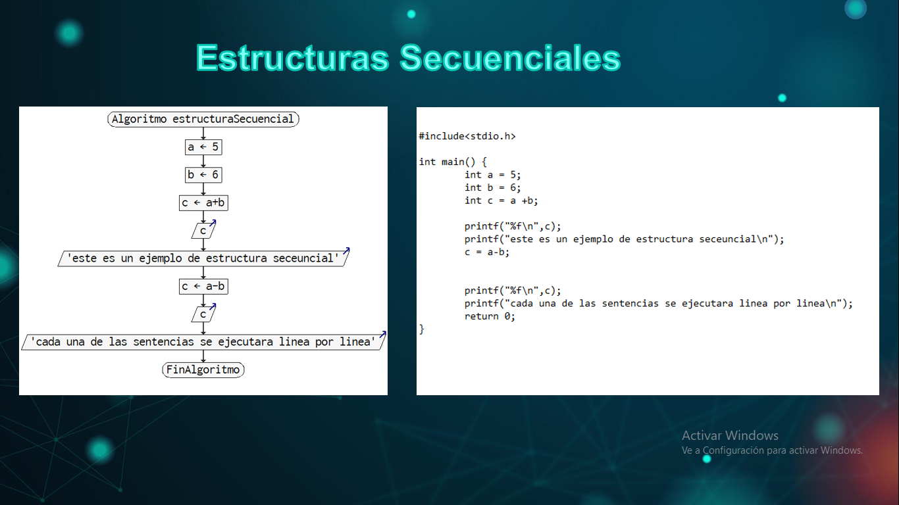
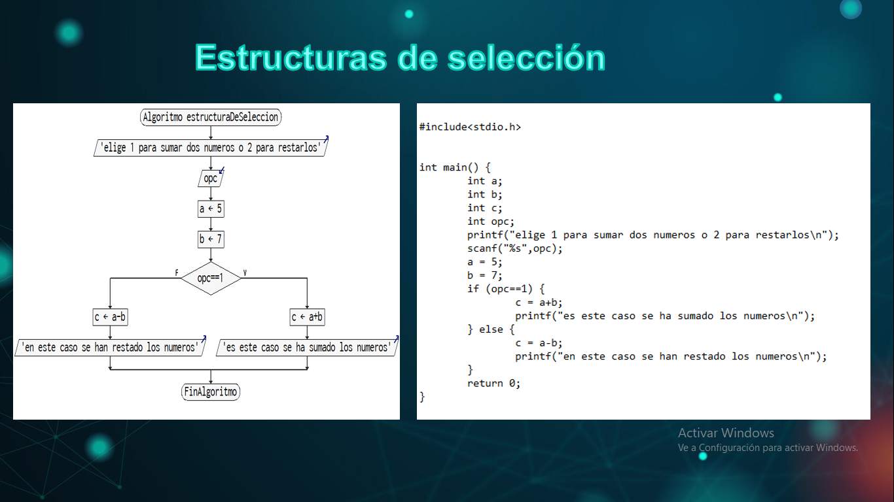
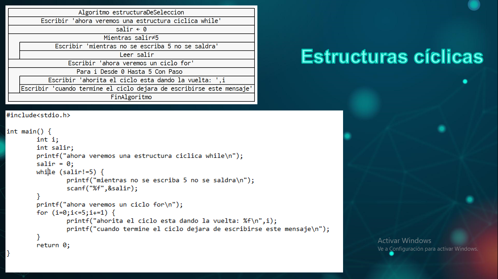

Para iniciar tenemos las estructuras de tipo secuencia las cuales tienen como característica el hecho de que son las que se leen linea por
linea, es decir, una instrucción a la vez, de estas se leerán todas, sin excepción alguna y no se formaran bucles, por lo que, por ejemplo en un
diagrama de flujo, se representan con instrucciones de una sola dirección o de una sola flechilla que no se regresa, como puede ser por ejemplo,
ingresar un dato, ingresar un segundo dato, sumar ambos datos y guardarlo en un resultado, mostrar el resultado, y salir, ese seria un ejemplo de
un algoritmo con estructura secuencial.
Estructura de seleccion

Después de eso, tenemos los que son de elección o multi opción, estas se caracterizan por tener que elegir un determinado flujo si cierta
condición se cumple como puede ser el caso de un if-else o solo if, e donde por ejemplo, retomando el ejemplo anterior, si la suma de esos
datos que hemos ingresados con igual a 5 , se envié un mensaje diciendo pay de queso.
Ademas de los if- else, otras estructuras que podemos encontrar de selección, son los switch, los cuales tendrán casos para cada uno de las
posibilidades que se desean acertar, y una de defecto por si ninguna de estas se cumple.
Estructura ciclica

Y por ultimo tenemos las estructuras cíclicas, en estas podemos ver el for, do while, y while, los cuales mientras se este cumpliendo la
condición, seguirán este ciclo, retomando el ejemplo de la estructura secuencial, mientras el numero que salga sea menor a 7, por ejemplo, se
seguirá repitiendo el pedir dos datos y sumarlos, en este caso, cuando en numero no sea menor a 7 se dejara de cumplir la condición, por lo que
el ciclo no se repetirá de nuevo, en estos ciclos, la diferencia es que en el for, definimos cuando queremos que empiece y termine, en el while,
la condición para que empiece y se repita, y en el do while para que se repita por lo que aunque sea una vez se ejecutara, de ahí viniendo su nombre,
hazlo primero, repite otra vez si se cumple la condición.